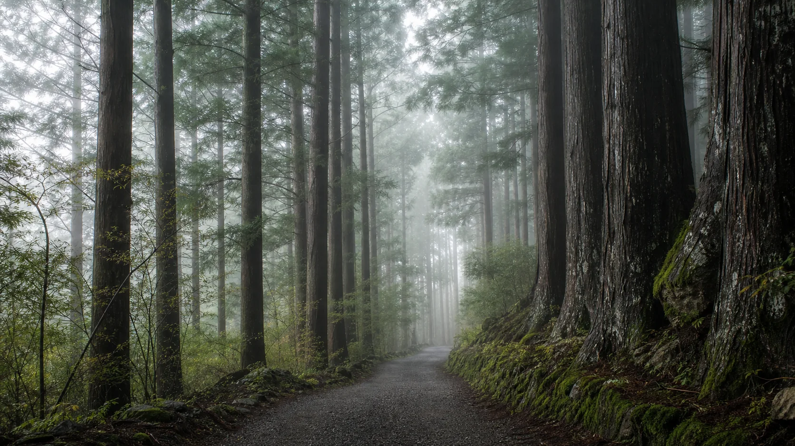
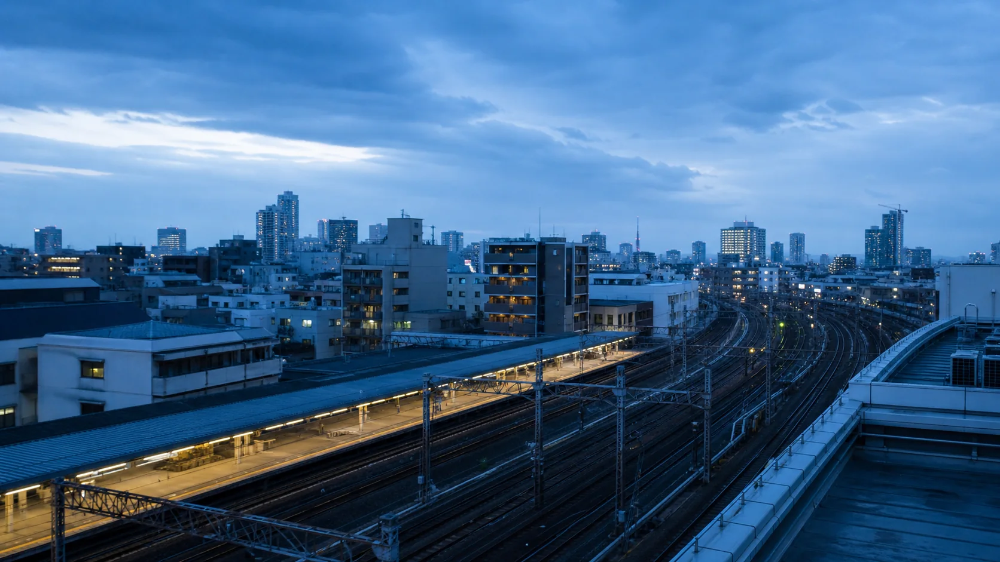

箱根
霧氣、森林與山間溫泉。
從河口湖、箱根到東京，把行程、轉乘、景點與行前準備整合成一個清楚可靠的旅行工作台。

霧氣、森林與山間溫泉。

在城市脈絡中，找到從容的移動方式。
需要的資訊，快速抵達。
用可編輯時間軸掌握每個階段，所有變更會自動儲存在目前裝置。
開啟時程 →護照、網路、保險與行李，逐項追蹤完成進度。
檢查準備 →機場、河口湖、箱根與東京之間的路線與票券比較。
規劃交通 →依區域整理景點、停留時間與實用交通提示。
探索景點 →用互動地圖理解轉乘節點與成田返程動線。
開啟地圖 →周遊巴士、富士急行與箱根登山線，快速查景點怎麼去。
開啟導覽 →餐廳、交通、飯店與緊急情境的常用語句。
查詢日語 →緊急電話、就醫、遺失物與災害應對資訊。
查看緊急資訊 →記錄日圓支出、換算台幣並計算同行者分攤。
管理旅費 →跨頁查找交通、景點與緊急資訊，收藏常用內容。
開始搜尋 →